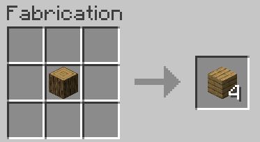
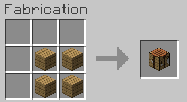
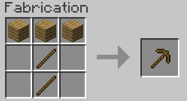
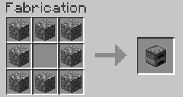
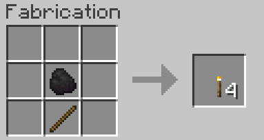

Le crafting est essentiel dans Minecraft. Voici quelques crafts de base pour démarrer :
| Objet | Craft | Description |
|---|---|---|
| Planches de bois |  | Utilisée pour la construction ainsi que le crafting. |
| Etabli |  | Utilisé pour crafter plus de choses. |
| Pioche en bois |  | Utilisée pour miner des blocs de pierre et de charbon. |
| Four |  | Utilisé pour cuire des choses à l'aide de carburants. |
| Torche |  | Utilisée pour éclairer. |
Voici d'autres crafts importants à connaître :